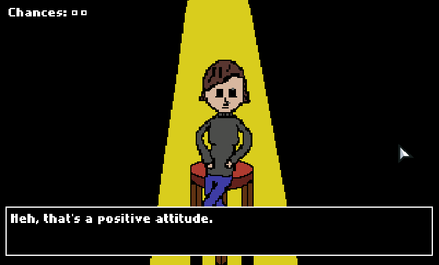
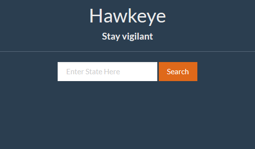
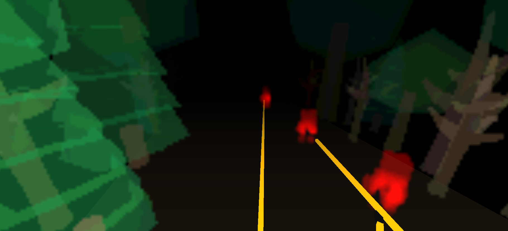
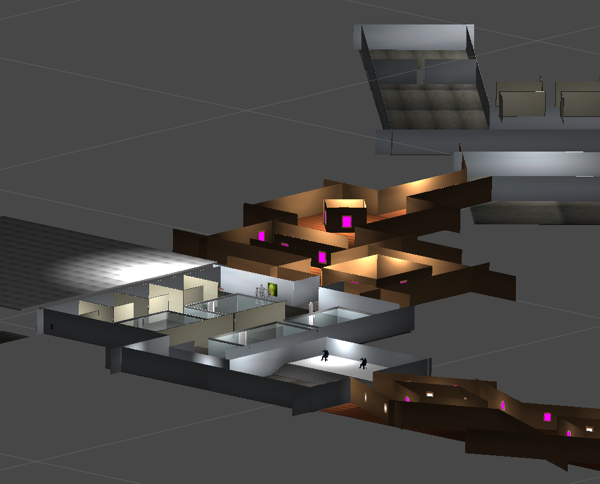
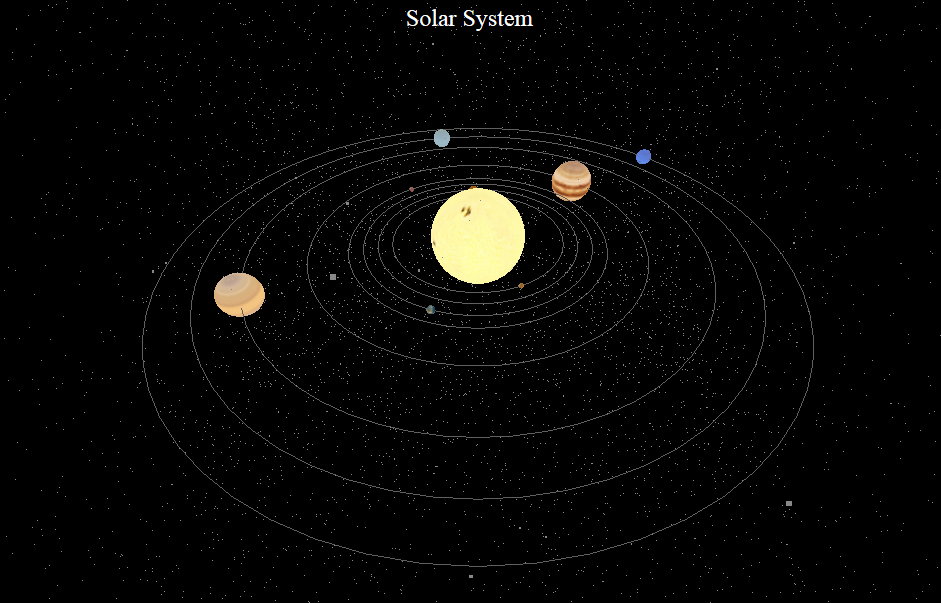
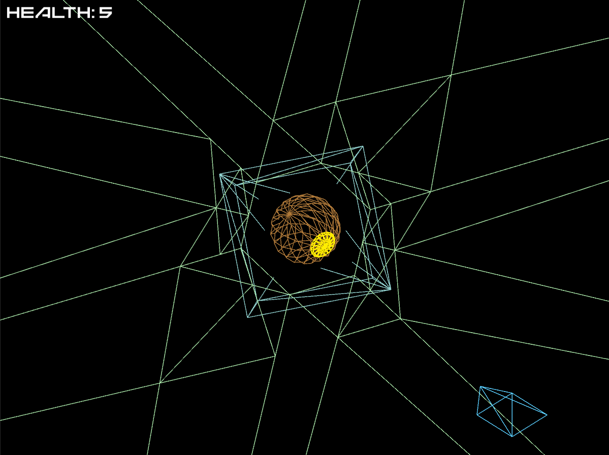
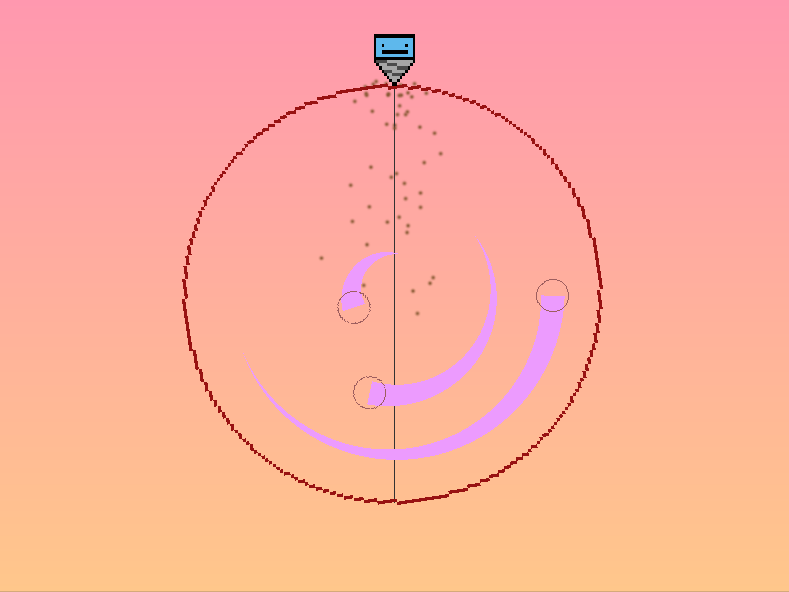

Interactive Media Creator
+
Full Stack Web Developer
My name is Sunil Rao and I'm a software developer operating in the Portland, OR area. My skills lie in the creation of interactive graphical applications as well as web applications. I am also a human being that runs solely on playing with and looking at pictures of my sister's
Yours truly
Welcome to my portfolio! With technology seeping into our everyday lives, ranging from the rise of the "internet of things" to a large segment of the population relying on social media services to get their news, now more than ever is it imporant to build our applications and services with care and responsibility. My work ranges from games raising awareness of mental health issues to web applications that increase voter engagement with local/state elections. Below you can find my projects and work experience.
C#, C++, Java, JavaScript, ActionScript, HTML5
Hibernate, Spring, NodeJS
WebGL, ThreeJS
C, ASM, Python
OpenSceneGraph, Oculus SDK
Android+iOS App Development, Photoshop, SketchUp